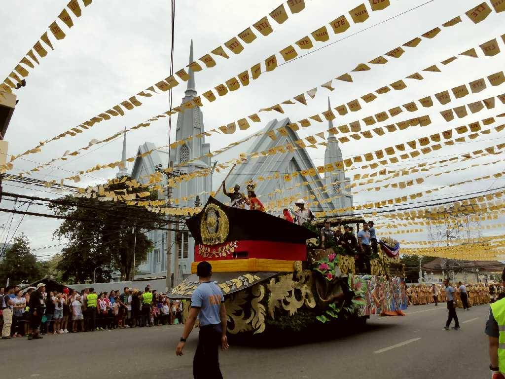
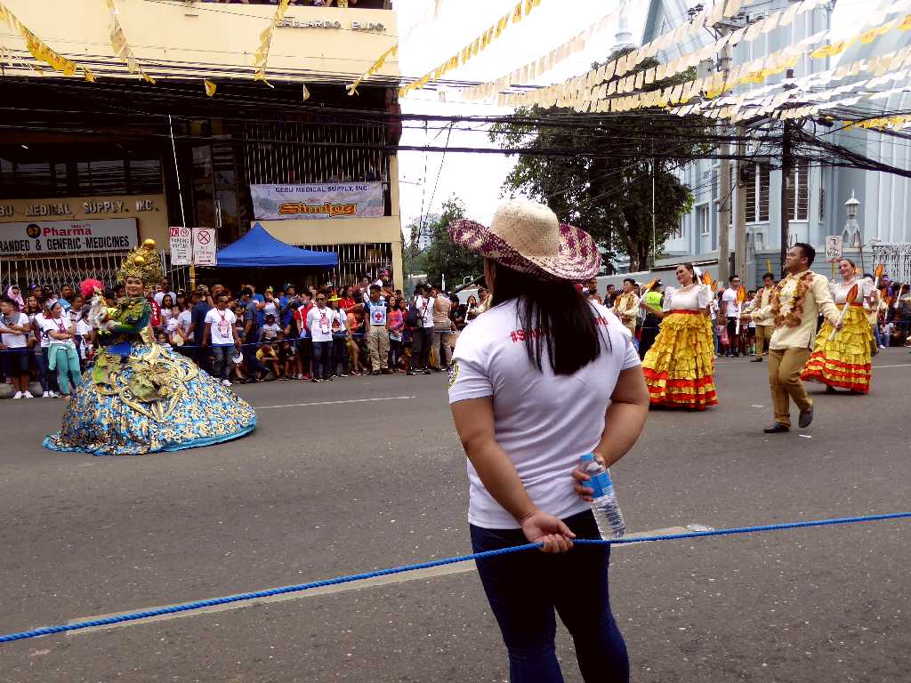
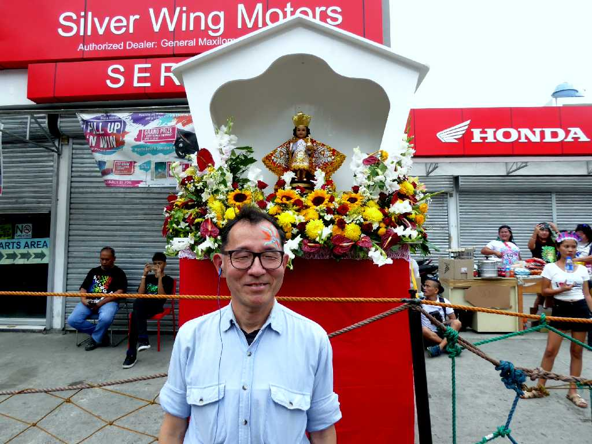
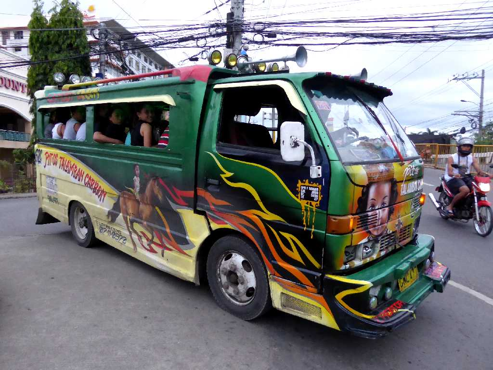

Parade Sinulog Festival Cebu
セブのサントニーニョを祝福するシヌログ祭でサントニーニョ像を先頭にパレードが始まる

Parade Sinulog Festival Cebu
１５２１年にマゼランの航海に同行していた宣教師にセブ島領主が洗礼を受け幼いキリストのサントニーニョ像を贈呈されたことからフィリッピンキリスト教が始まっている

January 20 2019 Sinulog Festival Cebu

Jeepney Cebu
乗合タクシーのジープニーはアメリカ軍のジープを改造してタクシーに利用したのが始まりで小回りが利き乗合で料金が安い